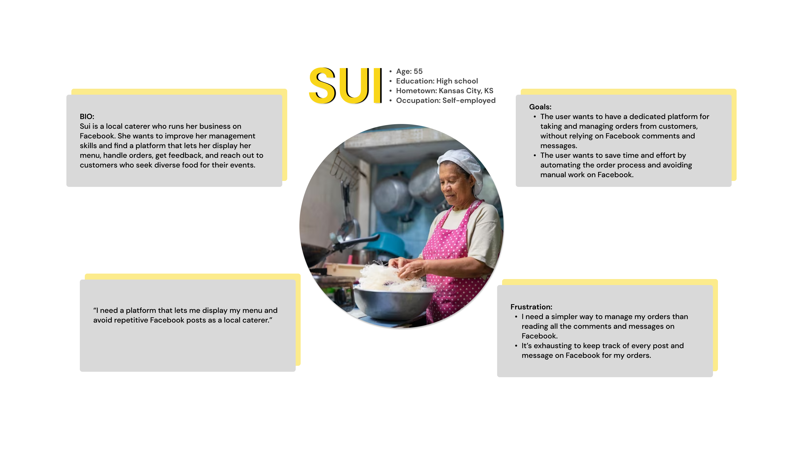

Case Study: Katerit
Connecting Customers with Local Caterers
Project Overview
This project was part of the Google UX Design Professional Certificate program on Coursera, where I was tasked with designing a mobile app and responsive website for local caterers and businesses as part of the "Design for Social Good" module. The goal was to create a platform that simplifies the process of finding and ordering catering services while supporting local businesses in reaching a broader audience. The project emphasized user-centered design principles, accessibility, and fostering community engagement.
You can view the Figma Hi-fi prototype here → Hi-fi Prototype.
My Responsibilities
- Research: Conducting user interviews, competitive analysis, and market research to understand user needs and pain points.
- Strategy: Defining the problem statement, creating user personas, empathy maps, and user journeys to guide the design process.
- Design: Developing paper wireframes, digital wireframes, low-fidelity and high-fidelity prototypes, and responsive web designs.
- Testing: Conducting usability testing with real users, gathering feedback, and iterating on designs to improve usability and accessibility.
- Delivery: Preparing final mockups, prototypes, and design specifications for handoff to developers.
Project Duration
The project was completed over 4 weeks, with each week dedicated to a specific phase of the design process:
- Week 1: Research and problem definition.
- Week 2: Ideation, wireframing, and low-fidelity prototyping.
- Week 3: High-fidelity prototyping and usability testing.
- Week 4: Iteration, final design, and documentation.
The Problem
Catering is an essential service for events and occasions, but the process of finding and ordering from local caterers is often frustrating and inefficient. Customers struggle to discover reliable local options, while small caterers face significant challenges in marketing their services and competing with larger chains. Limited online resources and reliance on platforms like Facebook make it difficult for caterers to manage orders, communicate with customers, and showcase their offerings effectively. This disconnect creates a gap in the market for a streamlined, user-friendly platform that connects customers with local caterers while supporting the growth of small businesses.
The Goal
The primary goal of this project was to design a user-friendly platform that simplifies the process of discovering, ordering, and managing catering services from local businesses. By creating a hyperlocal solution, the app aims to:
- Empower customers to easily find and order from local caterers.
- Provide caterers with tools to manage orders, customize menus, and communicate with customers.
- Foster a sense of community by supporting small businesses and promoting the local food industry.
- Enhance the local economy by increasing visibility and accessibility for local caterers.
Research
To better understand the needs of both customers and caterers, I conducted user interviews with two local caterers and surveyed potential customers. Key insights included:
- Frustration with Facebook: Caterers found Facebook inefficient for managing orders and communicating with customers. They wanted a dedicated platform to streamline these processes.
- Desire for Control: Caterers expressed a need for more control over orders, including the ability to customize menus, accommodate dietary restrictions, and set pricing for special requests.
- Limited Online Presence: Small caterers struggled to compete with larger chains due to limited resources and exposure. They wanted a platform that prioritized local businesses and provided tools to showcase their offerings.
Personas
Based on the research insights, I created one primary persona that addresses the pain points of both caterers and customers. This persona represents a local caterer who is looking to expand their customer base, streamline order management, and provide a seamless experience for customers seeking reliable, high-quality catering options.
Design Process
Paper Wireframes
I began by sketching multiple iterations of the mobile app's homepage, focusing on highlighting local caterers as the main attraction. After several rounds of ideation, I combined the best elements into a final paper wireframe.
Digital Wireframes
Using the final paper wireframe as a foundation, I translated the design into a digital format using Figma. I then expanded the design to include other key screens, such as the menu page, order customization page, and checkout flow.
User Flow
I mapped out the primary user flow to ensure a seamless experience for both customers and caterers. The flow included:
- Home: Discovering local caterers.
- Marketplace: Browsing menus and customizing orders.
- Placing and confirming orders.
- Receiving order updates and reminders.
Information Architecture
To ensure intuitive navigation, I created a sitemap that organized the app's content and features logically. Key sections included:
- Home: Showcase local caterers with filters for cuisine, budget, and dietary restrictions.
- Menu: Allow customers to browse and customize catering options.
- Order Management: Enable caterers to manage orders, update menus, and communicate with customers.
- Profile: Provide caterers with tools to create and manage their business profiles.

Prototyping and Testing
Low-Fidelity Prototype
I developed a low-fidelity prototype to test the core functionality of the app. This included basic interactions such as browsing caterers, customizing orders, and completing the checkout process.
You can view Figma Low-fi prototype here: Low-fi Prototype.
Usability Testing
I conducted usability testing with 5 participants, including both caterers and customers. Key findings included:
- Users appreciated the simplicity of the interface but requested more filtering options for caterers.
- Caterers wanted clearer instructions for setting up their profiles and menus.
- Some users found the checkout process confusing and suggested adding a progress indicator.
High-Fidelity Prototype
Based on the feedback, I iterated on the design and created a high-fidelity prototype with improved navigation, additional filtering options, and a streamlined checkout process.
You can view Figma Hi-fi prototype here: Hi-fi Prototype.
Final Design
The final design features a clean, intuitive interface that prioritizes ease of use for both customers and caterers. Key elements include:
- Homepage: Showcasing local caterers with filters for cuisine, budget, and dietary restrictions.
- Customizable Menu: Allowing customers to add special requests and dietary accommodations.
- Streamlined Checkout: Featuring clear progress indicators and confirmation messages.
- Caterer Dashboard: Enabling caterers to manage orders, update menus, and communicate with customers.
Reflection
This project was a rewarding challenge that allowed me to apply UX design principles to a real-world problem. Despite the tight timeline, I was able to deliver a design that met the needs of both customers and caterers. However, there are areas for improvement:
- Creating additional personas to represent a wider range of user needs and behaviors. While the single persona I developed addressed key pain points, more personas could have provided deeper insights into diverse user groups, such as customers with specific dietary preferences or caterers with unique business models.
- Conducting more extensive user testing with a larger and more diverse group of participants.
- Collaborating with developers earlier in the process to ensure feasibility and technical alignment.
- Exploring additional features, such as integration with social media and loyalty programs, to further enhance the user experience.
Overall, this project reinforced the importance of user-centered design and iterative testing in creating effective solutions.
Next Steps
- Develop additional personas to better represent the diverse needs of both customers and caterers. This will help ensure the platform is inclusive and addresses a wider range of user scenarios.
- Conduct additional usability testing to validate the final design.
- Explore partnerships with local caterers to pilot the app.
- Develop a marketing strategy to promote the platform and attract users.